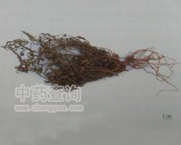

鱼胆草

拼音
Yú Dǎn Cǎo
别名
青鱼胆草、水灵芝[四川]
来源
龙胆科獐牙菜属植物鱼胆草Swertia davidi Franch.的全草。夏秋采集，鲜用或晒干。
生境分布
生于丘陵地区的沟边较湿润处。分布四川、湖北等地。
药材特点
多年生草本，全体光滑。根黄色或黄褐色，略分歧，须根较少。茎基部多分枝，较纤细，不明显的四方形，具四纵棱。单叶对生，近于无柄；叶片线形或线状披针形，长1～4厘米，宽1～3毫米，先端尖或稍钝，边缘略反卷，两面均绿色。聚伞状圆锥花序，花梗纤细，长1.5～4.5厘米；萼片4，线状披针形；花瓣4，卵形或卵状披针形，天蓝色或淡紫色，内侧基部有2个腺体，腺体周围有长毛；雄蕊4。蒴果椭圆形。种子多数。
性状
性状鉴别 全草多分枝，尤以基部为多。光滑无毛。茎纤细略呈四棱形。单叶对生，近无柄；多皱缩。完整叶片线形或线状披针形，长1-4cm，宽1-3mm，先端尖，全缘，略反卷。有时可见残留花序或花。气微，味苦。
性味
苦，凉。
功能主治
清肺热，杀虫。用于湿热黄疸，喉头红肿，恶疮疥癣。
用法用量
0.5～2钱，水煎服；外用鲜品捣烂敷患处。
化学成分
全草含秦艽碱甲（gentianine）[1]，熊果酸（ur-solic acid）和1，5，8-三羟基-3-甲氧基呫吨酮即邹菊叶龙胆酮（1，5,8－trihydroxy－3－methoxyxanthone,billidifolium）［2］。
药理作用
1：无药理作用数据
摘录
《全国中草药汇编》